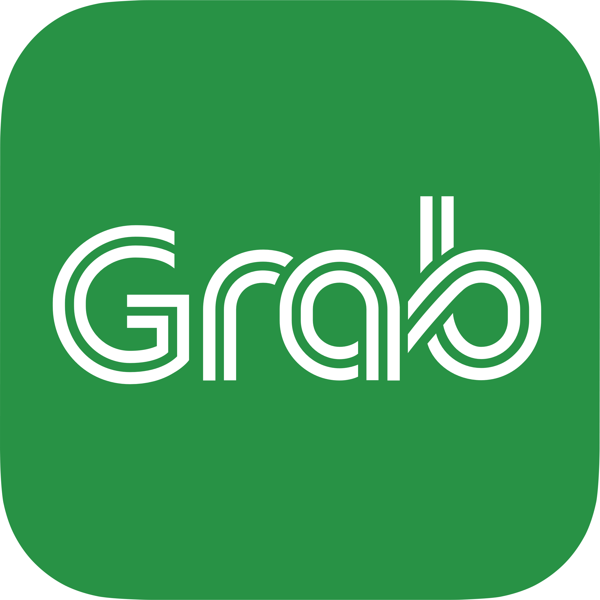

Transportation
Perlis
RailTravel Station
BusOnlineTicket
MARALINER
redBus
Kedah
TRAIN36
redBus
Penang
Travels With Sun
myRapid
MRT CORP
redBus
Kelantan
yelp
RailTravel Station
redBus
Terengganu
WiKiRoutes
FootPrint Travels
redBus
Perak
Terminal Meru Jaya
PerakTransit
Selangor
myRapid
MRT CORP
BusOnlineTicket
Moovit
Negeri Sembilan
Moovit
RailTravel Station
Melaka
Melaka Sentral
redBus
Pahang
Express CTBUS
BusOnlineTicket
redBus
Johor
BusInterchange
redBus
myBAS
causewaylink
Sabah
MySabah
easyBook
Long Distance Bus Service
Sarawak
BusAsia
BusOnlineTicket
